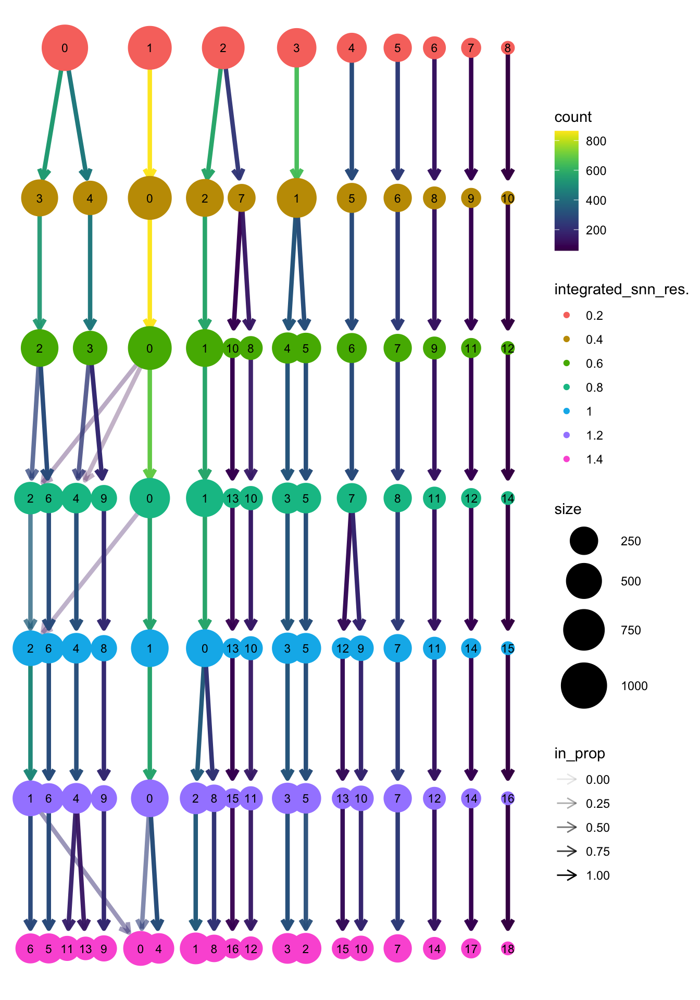
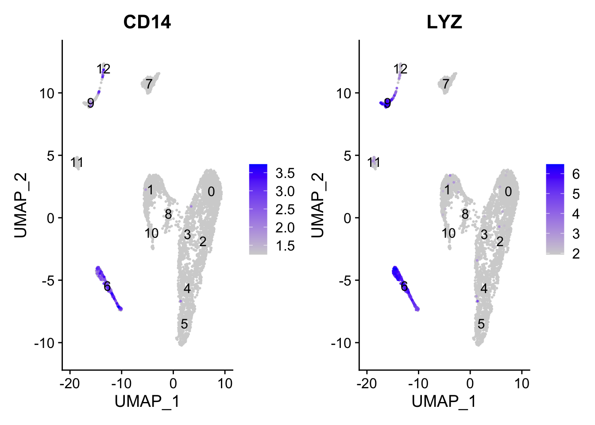
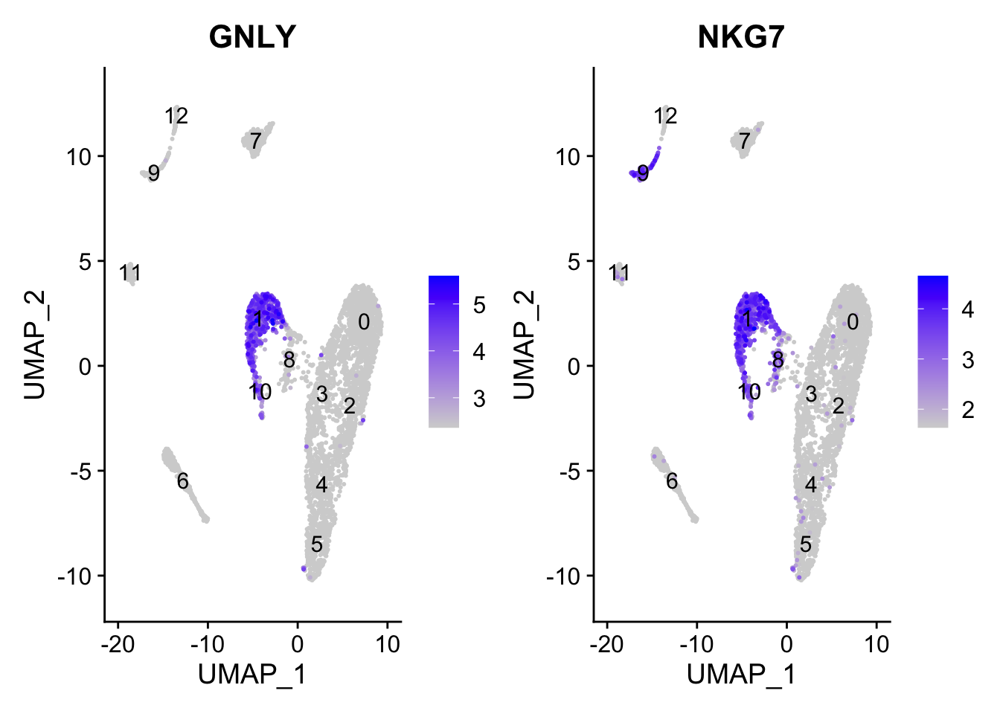
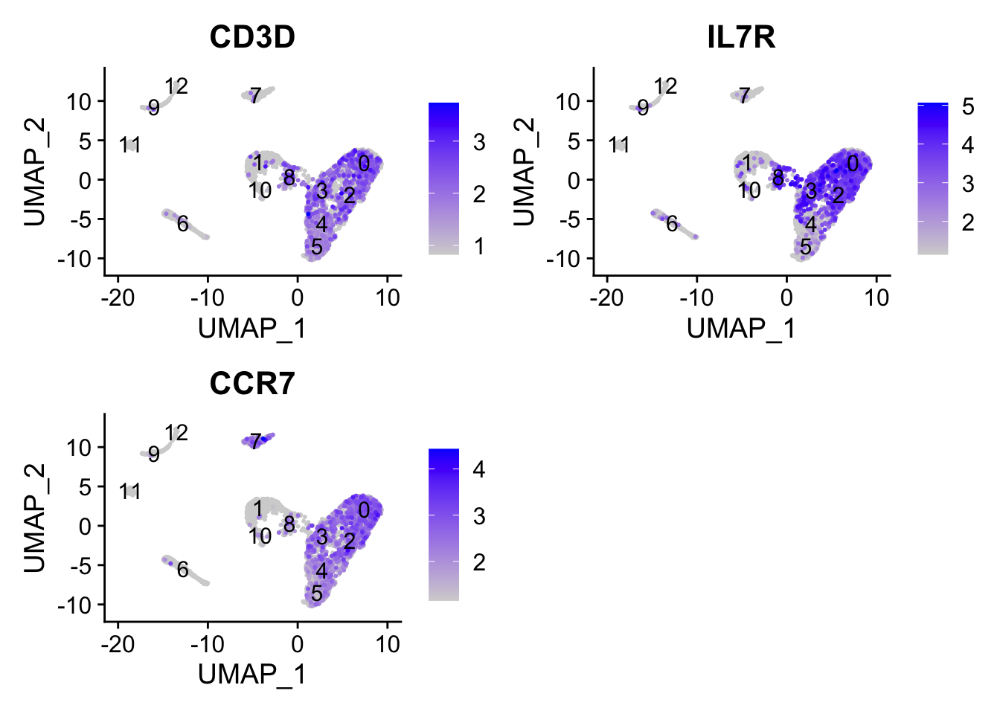

Chapter 5 Clustering
Load RData
Load the RData which contains all files from previous chapter.
load("data/intermediate_data/chapter4.RData")1. Clustering
Now that we have our high quality cells integrated, we want to know the different cell types present within our population of cells.
Seurat uses a graph-based clustering approach, which embeds cells in a graph structure, using a K-nearest neighbor (KNN) graph (by default), with edges drawn between cells with similar gene expression patterns. Then, it attempts to partition this graph into highly interconnected ‘quasi-cliques’ or ‘communities’.
We will use the FindClusters function to perform the graph-based clustering. The resolution is an important argument that sets the “granularity” of the downstream clustering and will need to be optimized for every individual experiment.
Increasing resolution value leads to a greater number of clusters, which is often required for larger datasets.
The FindClusters function allows us to enter a series of resolutions and will calculate the “granularity” of the clustering. This is very helpful for testing which resolution works for moving forward without having to run the function for each resolution.
# Determine the K-nearest neighbor graph
integrate.filtered.rna <- FindNeighbors(object = integrate.filtered.rna, dims = 1:10)
# Determine the clusters for various resolutions
integrate.filtered.rna <- FindClusters(object = integrate.filtered.rna,
resolution = c(0.2, 0.4, 0.6, 0.8, 1, 1.2, 1.4),
verbose = F)The meta.data has a separate column for each of the different resolution calculated. We can look at how many clusters in each resolution.
integrate.filtered.rna@meta.data %>%
dplyr::select(contains("integrat")) %>%
map_int(~ unique(.x) %>% length)integrated_snn_res.0.2 integrated_snn_res.0.4 integrated_snn_res.0.6
9 11 13
integrated_snn_res.0.8 integrated_snn_res.1 integrated_snn_res.1.2
15 16 17
integrated_snn_res.1.4
19 We start with the resolution of 0.6. We assign the identity of the clusters using the Idents function to specify that we want to look at the clusters calculating with resolution = 0.6.
Idents(object = integrate.filtered.rna) <- "integrated_snn_res.0.6"
# UMAP visualization
DimPlot(integrate.filtered.rna,
reduction = "umap",
label = TRUE,
label.size = 6)
Change to other resolution values. How do the clusters change?
2. Distribution of cells per cluster
The number of clusters are sensitive to the resolution. The demo dataset has PBMC and we expect each cluster contains cells from both samples.
FetchData(integrate.filtered.rna,
vars = c("ident", "Sample_Name")) %>%
dplyr::count(ident, Sample_Name) %>%
tidyr::spread(ident, n) Sample_Name 0 1 2 3 4 5 6 7 8 9 10 11 12
1 naive 355 243 428 226 8 5 281 70 96 62 13 35 28
2 treated 508 332 140 217 322 304 14 177 53 71 82 59 31We can split the UMAP by sample.
3. Exploring known cell type markers
We can explore some known cell type markers to get an idea about the identity of clusters.
Some typical cell type markers:
CD14+ monocytes: CD14, LYZ
Conventional dendritic cells: FCER1A, CST3
B cells: CD79A, MS4A1
T cells: CD3D
CD4+ T cells: CD3D, IL7R, CCR7
CD8+ T cells: CD3D, CD8A
NK cells: GNLY, NKG7
Macrophages: MARCO, ITGAM, ADGRE1
The FeaturePlot makes it easy to visualize a handful of genes using the gene IDs stored in the Seurat object. We can easily explore the expression of known gene markers on top of our UMAPs. Let’s go through and determine the identities of the clusters. To access the normalized expression levels of all genes, we can use the normalized counts stored in the RNA assay slot.
DefaultAssay(integrate.filtered.rna) <- "RNA"- CD14+ monocytes: CD14, LYZ
FeaturePlot(integrate.filtered.rna,
reduction = "umap",
features = c("CD14", "LYZ"),
order = TRUE,
min.cutoff = 'q10',
label = TRUE)
- B cells: CD79A, MS4A1
FeaturePlot(integrate.filtered.rna,
reduction = "umap",
features = c("CD79A", "MS4A1"),
order = TRUE,
min.cutoff = 'q10',
label = TRUE)
- NK cells: GNLY, NKG7
FeaturePlot(integrate.filtered.rna,
reduction = "umap",
features = c("GNLY", "NKG7"),
order = TRUE,
min.cutoff = 'q10',
label = TRUE)
- T cells: CD3D
FeaturePlot(integrate.filtered.rna,
reduction = "umap",
features = c("CD3D"),
order = TRUE,
min.cutoff = 'q10',
label = TRUE)
- CD4+ T cells: CD3D, IL7R, CCR7
FeaturePlot(integrate.filtered.rna,
reduction = "umap",
features = c("CD3D", "IL7R", "CCR7"),
order = TRUE,
min.cutoff = 'q10',
label = TRUE)
- CD8+ T cells: CD3D, CD8A
FeaturePlot(integrate.filtered.rna,
reduction = "umap",
features = c("CD3D", "CD8A"),
order = TRUE,
min.cutoff = 'q10',
label = TRUE)
4. Save
Save the files into RData for documentation.
# save(integrate.filtered.rna, expMat, file = "data/intermediate_data/chapter5.RData")